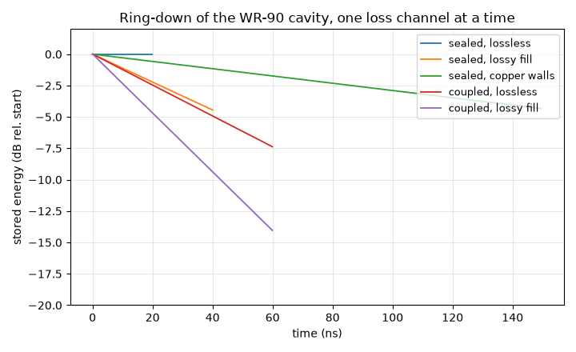

Note
Go to the end to download the full example code.
Ring-down: the loaded frequency and Q budget of a coupled resonator#
A resonator that is coupled to the outside world does not resonate where the closed one does, and it does not store energy as long. Both shifts matter as soon as something has to be tuned to the resonator — a particle beam driving the output cavity of a klystron has to be modelled at the loaded frequency, not at the frequency an eigenmode solve of the sealed cavity returns.
A ring-down measures both in a single transient run: start the march inside the resonator’s mode with the feed line empty, then watch what happens. The stored energy decays as
so the slope of \(\ln W\) is the loaded \(Q_L\), while the signal arriving at the port carries the loaded frequency.
Splitting \(Q_L\) into its channels takes one run per channel, because each loss mechanism can be switched off in the model:
Two blocks copy into any script: one that turns a resonator mode into the initial field of a march, one that reads \(Q\) and the loaded frequency off the result. The page checks itself twice — against the closed form \(Q_\text{fill} = \omega_0\varepsilon/\sigma\) of a homogeneously filled cavity, and against the sum rule above.
import matplotlib.pyplot as plt
import numpy as np
import magnelio as mio
from magnelio import geo, ports, post, sources
from magnelio.constants import EPS0
The resonator and its feed#
A WR-90 box resonating in TE101 near 8.2 GHz, closed at one end and coupled at the other through a slot in a metal iris to a length of the same waveguide, terminated by a port. The slot width is the coupling knob. Cavity, slot and feed carry the same lossy filling — homogeneously, so that its loss tangent gives a filling Q that does not depend on how the mode redistributes when the coupling is turned up.
A, B = 22.86e-3, 10.16e-3 # WR-90 cross-section [m]
D_CAV = 30e-3 # cavity length [m]
T_IRIS = 2e-3 # iris thickness [m]
L_WG = 30e-3 # feed waveguide to the port [m]
W_IRIS = 8e-3 # coupling slot width [m]
F_DESIGN = 8.15e9 # where TE101 is expected [Hz]
F_MAX = 12e9
TAN_DELTA = 5e-4 # loss tangent of the filling, at F_DESIGN
SIGMA = 2 * np.pi * F_DESIGN * EPS0 * TAN_DELTA # the conductivity that realises it
SIGMA_CU = 5.8e7 # copper walls [S/m]
def resonator(*, coupled, lossy):
"""The model; ``coupled=False`` seals the cavity (no iris, no port)."""
fill = mio.Material.from_isotropic("fill", epsilon=1.0, sigma=SIGMA if lossy else 0.0)
model = mio.GeometryModel(background="pec")
model.add(geo.Brick.from_corners((0, 0, 0), (A, B, D_CAV), material=fill))
if not coupled:
return model
z0, z1 = D_CAV, D_CAV + T_IRIS
model.add(
geo.Brick.from_corners(
((A - W_IRIS) / 2, 0.0, z0), ((A + W_IRIS) / 2, B, z1), material=fill
)
)
model.add(geo.Brick.from_corners((0, 0, z1), (A, B, z1 + L_WG), material=fill))
model.add_port(ports.PortWaveguide(name="out", plane="zmax", n_modes=1))
return model
Block 1 — before: the resonator’s mode as the initial field#
A ring-down starts with the resonator charged and the feed line
empty. That is the mode of the uncoupled resonator, placed on the
grid of the coupled model and zero outside the cavity — not the
eigenmode of the coupled model, whose solver sees a metal wall where
the port is and therefore returns a mode of cavity and feed line
together. An initial field that already reaches the port plane is
refused: the port’s transparent boundary is exact only for an
exterior that was quiet before t = 0.
For a rectangular box the mode is the closed form below. For a
resonator without one, solve the sealed model with
AnalysisEigenmode, take result.field(0) and evaluate it with
field.at(points) inside the cavity, zero outside.
H = 0 picks the instant of maximum electric field, which is the
natural start: the march places the magnetic half-step itself.
def te101_field(x, y, z):
"""E of the TE101 mode of the sealed cavity, zero beyond it [V/m]."""
inside = (z >= 0.0) & (z <= D_CAV)
e_y = np.where(
inside,
np.sin(np.pi * np.clip(x, 0.0, A) / A) * np.sin(np.pi * np.clip(z, 0.0, D_CAV) / D_CAV),
0.0,
)
return np.zeros_like(e_y), e_y, np.zeros_like(e_y)
def ring_down(model, t_end, *, name="mode0", wall_sigma=None):
"""March from the resonator's mode and return the result.
``wall_sigma`` turns the metal from perfect conductor into a
surface-impedance wall of that conductivity, which is how the
wall channel enters the decay. Its branch currents start at
zero — the wall carried none before ``t = 0``.
"""
mesh = mio.Mesh.from_geometry(model, mio.MeshControl(min_nodes_per_wavelength=10), f_max=F_MAX)
source = sources.SourceFieldInitial.from_function(mesh.grid, name=name, E=te101_field)
walls = {"wall_model": "sibc", "wall_sigma": wall_sigma} if wall_sigma else {}
analysis = mio.AnalysisTD(mesh=mesh.with_sources([source]), verbose=False, **walls)
return analysis.run(excitations=[name], t_end=t_end, energy_stop_db=None), mesh
Block 2 — after: Q from the decay, frequency from the port#
result.energy_trace is the decay curve, recorded at the solver’s
own check cadence. Fit a straight line to its logarithm and convert
the slope: \(Q = -\omega_0/\text{slope}\).
Fit the energy, not the envelope of a field probe: a probe swings through zero twice per period, and a fit to \(|E(t)|\) reads the zeros along with the peaks. The energy trace is the quantity the leapfrog conserves, so it decays smoothly.
The loaded frequency is the peak of the spectrum of what leaves through the port — a ring-down radiates only what the resonator holds, so that spectrum is the loaded resonance itself.
def q_from_ringdown(result, f0, *, floor_db=40.0):
"""Q from the decay of the stored energy over ``floor_db`` of it."""
trace = result.energy_trace
t, w = trace["time"], trace["energy"]
keep = w > w.max() * 10 ** (-floor_db / 10)
slope = np.polyfit(t[keep], np.log(w[keep]), 1)[0]
return -2 * np.pi * f0 / slope
def loaded_frequency(result, port):
"""Peak of the port spectrum [Hz], parabolically interpolated."""
signal = np.asarray(result.signal(port).values)
spectrum = np.abs(np.fft.rfft(signal * np.hanning(signal.size)))
df = 1.0 / (signal.size * result.dt)
k = int(spectrum.argmax())
y0, y1, y2 = np.log(spectrum[k - 1 : k + 2])
return (k + 0.5 * (y0 - y2) / (y0 - 2 * y1 + y2)) * df
One run per loss channel#
Sealed and lossless first: that run measures nothing physical, it measures the floor — how long the discretisation itself holds energy. Everything below has to sit far above it.
def q_fill_exact(f):
"""Q of a homogeneously filled cavity at *f* — exact, whatever its shape.
A conductivity is a *frequency-dependent* loss tangent,
``tan(delta) = sigma / (omega·eps)``, so the filling Q rises with
frequency: ``Q_fill = omega·eps / sigma``.
"""
return 2 * np.pi * f * EPS0 / SIGMA
runs = {}
runs["sealed, lossless"], _ = ring_down(resonator(coupled=False, lossy=False), 20e-9)
runs["sealed, lossy fill"], mesh_sealed = ring_down(resonator(coupled=False, lossy=True), 40e-9)
runs["sealed, copper walls"], _ = ring_down(
resonator(coupled=False, lossy=False), 150e-9, wall_sigma=SIGMA_CU
)
runs["coupled, lossless"], _ = ring_down(resonator(coupled=True, lossy=False), 60e-9)
runs["coupled, lossy fill"], _ = ring_down(resonator(coupled=True, lossy=True), 60e-9)
f_loaded = loaded_frequency(runs["coupled, lossless"], "out")
f_sealed = float(
mio.AnalysisEigenmode(mesh=mesh_sealed, n_modes=1, verbose=False).run().frequencies[0]
)
q_floor = q_from_ringdown(runs["sealed, lossless"], f_sealed)
q_fill = q_from_ringdown(runs["sealed, lossy fill"], f_sealed)
q_wall = q_from_ringdown(runs["sealed, copper walls"], f_sealed)
q_ext = q_from_ringdown(runs["coupled, lossless"], f_loaded)
q_loaded = q_from_ringdown(runs["coupled, lossy fill"], f_loaded)
print(f"sealed f0 = {f_sealed / 1e9:.4f} GHz")
print(f"loaded f0 = {f_loaded / 1e9:.4f} GHz ({(f_loaded / f_sealed - 1) * 100:+.2f} %)")
print(f"numerical floor Q = {q_floor:12.3g}")
print(
f"Q_fill Q = {q_fill:12.1f} exact {q_fill_exact(f_sealed):.1f}"
f" ({(q_fill / q_fill_exact(f_sealed) - 1) * 100:+.3f} %)"
)
q_wall_pert = post.wall_loss_Q(
mio.AnalysisEigenmode(mesh=mesh_sealed, n_modes=1, verbose=False).run(),
0,
sigma=SIGMA_CU,
).Q
print(
f"Q_wall Q = {q_wall:12.1f} perturbative {q_wall_pert:.1f}"
f" ({(q_wall / q_wall_pert - 1) * 100:+.3f} %)"
)
print(f"Q_ext Q = {q_ext:12.1f}")
print(f"Q_L measured Q = {q_loaded:12.1f}")
# The sum rule is evaluated where the loaded run resonates.
q_predicted = 1.0 / (1.0 / q_fill_exact(f_loaded) + 1.0 / q_ext)
print(
f"Q_L from the sum rule = {q_predicted:12.1f} ({(q_loaded / q_predicted - 1) * 100:+.2f} %)"
)
mesh | feature planes
mesh | grid lines
mesh | materials
mesh | conformal cells
mesh | PEC masks
mesh | 10 x 5 x 13 cells
mesh | feature planes
mesh | grid lines
mesh | materials
mesh | conformal cells
mesh | PEC masks
mesh | 10 x 5 x 13 cells
mesh | feature planes
mesh | grid lines
mesh | materials
mesh | conformal cells
mesh | PEC masks
mesh | 10 x 5 x 13 cells
mesh | feature planes
mesh | grid lines
mesh | materials
mesh | conformal cells
mesh | PEC masks
mesh | 10 x 5 x 36 cells
mesh | feature planes
mesh | grid lines
mesh | materials
mesh | conformal cells
mesh | PEC masks
mesh | 10 x 5 x 36 cells
sealed f0 = 8.2151 GHz
loaded f0 = 8.1135 GHz (-1.24 %)
numerical floor Q = 5.39e+08
Q_fill Q = 2015.8 exact 2016.0 (-0.007 %)
Q_wall Q = 7745.2 perturbative 7768.9 (-0.305 %)
Q_ext Q = 1798.0
Q_L measured Q = 944.7
Q_L from the sum rule = 944.8 (-0.01 %)
Three numbers carry the page. Q_fill reproduces
\(\omega_0\varepsilon/\sigma\) — the exact Q of a homogeneously
filled cavity, whatever its shape — to a few hundredths of a percent;
Q_wall agrees with the perturbative surface-resistance
evaluation on the same mode, two entirely different routes to the
same loss; and the measured Q_L matches the sum rule built from
the channels measured separately. When those hold on a case you can
check, the same procedure is trustworthy on a resonator that has no
closed form.
Note where each Q is evaluated. A conductivity is a loss tangent that falls with frequency, so the filling Q of the loaded resonance is not the one measured on the sealed cavity 1.2 % higher up; putting the sealed value into the sum rule is worth half a percent here, and more on a strongly coupled resonator.
The full budget of the coupled, filled, copper-walled resonator is what a design actually has to meet:
full budget: 1/Q = 1/1991 + 1/7745 + 1/1798 -> Q_L = 842.1
The decays, one channel at a time#
fig, ax = plt.subplots(figsize=(7.2, 4.4))
for label, result in runs.items():
trace = result.energy_trace
t_ns = trace["time"] * 1e9
w_db = 10 * np.log10(trace["energy"] / trace["energy"][0])
ax.plot(t_ns, w_db, lw=1.3, label=label)
ax.set_xlabel("time (ns)")
ax.set_ylabel("stored energy (dB rel. start)")
ax.set_title("Ring-down of the WR-90 cavity, one loss channel at a time")
ax.set_ylim(-20, 2)
ax.grid(alpha=0.3)
ax.legend(loc="upper right", fontsize=9)
fig.tight_layout()

What the number sees#
The coupling moves the frequency. The iris pulls the resonance below the sealed value by a few tenths of a percent here, and much further as the slot opens. That shifted frequency is what anything driving the resonator has to match; the sealed eigenfrequency is the wrong target.
Start in the resonator, not in the whole volume. The mode of the coupled model — cavity plus feed line behind a metal wall — is a different mode, and it reaches the port plane, where the transparent boundary assumes quiescence. The library refuses that start rather than returning a plausible wrong Q.
Why not read Q off S11. The same structure in the frequency domain has to be marched until the resonator has rung down anyway, or its resonance comes out too shallow. On this case a scattering run of 450 000 steps still gave a group-delay Q about 10 % below the ring-down value of a 39 000-step run, with \(|S_{11}|\) at 0.94 instead of 1. The ring-down reads the decay directly, which is why it is the method of choice for a high-Q structure.
Wall losses need a wall model. Perfect conductor gives a ring-down nothing to decay into;
wall_model="sibc"puts a surface impedance on the metal, and its branch currents simply start at zero — the wall carried no current beforet = 0. The agreement with the perturbative evaluation above says that start costs nothing.Watch the floor. The sealed lossless run sets the largest Q the discretisation can express. Keep the Q you report at least an order of magnitude below it.
Homogeneous filling keeps the budget clean. With the loss confined to part of the volume, opening the coupling redistributes the mode, the effective filling Q changes with it, and the sum rule stops holding — measured 128 against 190 predicted on a strongly over-coupled variant. Fill uniformly, or measure each channel at the coupling you actually use.
plt.show()
Total running time of the script: (0 minutes 35.055 seconds)